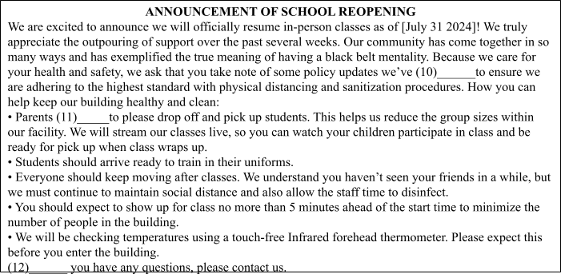
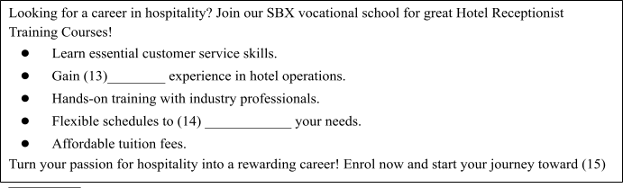

According to Chinese medicine, tai chi (18) ______, including a reduction in the signs of aging, an extension of life expectancy, improved flexibility, stronger muscles and tendons, and relief from a wide range of medical conditions, including but not limited to: depression, cancer, arthritis, skin disorders, and high blood pressure.
The majority of tai chi studies have focused on the benefits for the elderly, namely on improving balance and (19) ______. Injury and mortality from falls is the top cause of disability and death among the elderly, making this field of study crucial. A lot of people have long thought (20) ______ and falls because the motions are slow and purposeful, involving shifting your weight from leg to leg in sync with your upper body movements.
In a related study on tai chi for seniors, 54% of participants said that (21) ______ was due to their better balance. People in their sixties and seventies who did tai chi three times weekly for twelve weeks (60-minute sessions) were the subjects of one research. Statistically substantial gains (22) ______, strength, balance, and endurance after only six weeks. After another 12 weeks, the improvements in all of these categories got much better.
Adults of all ages experience stress due to the responsibilities of daily existence. (23) ______ that tai chi reduces stress, the deliberate breathing, flowing movements, and focused attention that practitioners muster could be the perfect antidote to your fast-paced existence.
Millions of individuals nowadays fight an uphill battle against obesity and inactivity. This is due in part to the high carbohydrate and fat content of their diet. Another issue is that most of us don't do (24) ______ to keep ourselves physically fit throughout the day and instead spend our nights in front of the TV. Our hectic schedules have prevented us (25) ______ exercising as regularly as we should.
The grueling hours at work and school leave little time for healthy eating. Convenient foods like frozen meals and canned vegetables aren't necessarily the best choice. Takeout and fast meals are also major contributors to many health problems.
(26) ______ a regular exercise routine is essential for good health. This may include anything from gentle yoga to weight training.
(27) ______, it is recommended that people of all ages consider exercising daily to prevent health problems. In the absence of a preexisting fitness regimen, it is up to you to select an activity (28) ______ brings you delight and begin its regular practice.
Many overweight adolescents filed a 2002 lawsuit against the American fast food giant McDonald's, blaming the fast food chain for their weight problems. They said that McDonald's cooked them up a false image of its cheeseburgers and other foods being healthy. They claimed the company failed to inform them of the risks of diabetes, hypertension, and obesity that come with consuming an excessive amount of sugary beverages and foods that are high in fat and salt. In a statement, the mother of a 15-year-old boy who weighed over 180 kilograms stated, "I always believed McDonald's was healthy for my son."
McDonald's rejected accusations that they were to blame for the health issues of these teens. “People don't go to sleep thin and wake up obese,” stated Brad Lerman, a lawyer for McDonald's. As an additional point, he mentioned that the knowledge of the functions of hamburgers and French fries has been around for quite some time. As a result, the court rejected the case, stating that "it is not the place of the law to protect people against their own excesses." Put simply, they have no right to hold the food industry responsible if they opt to consume excessive amounts of harmful food.
There have been previous unsuccessful attempts to sue fast-food chains in the United States. The 'Cheeseburger Bill,' first introduced in 2005 and enacted by the US House of Representatives, took effect that year. As a result, individuals who are overweight found it far more difficult to sue the food business. However, debates about accountability have persisted despite the bill's passage. Various scientific research suggests that fast food is addictive and potentially dangerous. Thus, is it possible to compare selling fast food to trafficking drugs?
A recent analysis by the housing nonprofit Shelter revealed that young people across the nation are being thrust into a world of homelessness and poverty. Shelter predicts that around 150,000 youths (those between the ages of sixteen and twenty-five) will experience homelessness this year. Some of the city's youth may spend the night sleeping in makeshift shelters like "cardboard city" in London, where individuals of all ages use cardboard boxes as their sole means of subsistence. Some shelters are run by nonprofits and hostels where people can stay for up to ten weeks for free.
Just who are these folks, though? People who are looking for a place to sleep are often not runaways but "throwaways"—those who have been forcibly removed from their families due to circumstances such as parental divorce, an uncaring stepparent, or another unfair circumstance.
Imagine a girl named Alice who is sixteen years old and a student. She had recently graduated from high school with honors and did not hail from an impoverished background. While she was at a hostel completing her physics assignments, the members of the Shelter team found her. She was kicked out of the house because her parents wouldn't let her take Science Advanced Level exams, claiming that such subjects were unladylike. That was the only excuse they gave her.
The government's policies, according to Shelter, do little to aid these children. Shelter reports that a national crisis is developing as a result of rising rents, a lack of affordable accommodation, and a reduction in benefits for individuals under the age of twenty-five. individuals between the ages of sixteen and twenty-five receive less money than older individuals due to recent changes in the benefits legislation, and they can only earn state assistance if they can prove they left home for a valid cause.
According to Shelter, a growing number of youths are forced to sleep on the streets as a result of severe cuts to youth welfare. Also, as Shelter points out, having no permanent address makes it impossible to acquire a job, and if that doesn't work, you'll still be homeless since you won't have any money to pay for housing. It's a hopeless predicament.
Nhập thông tin để hệ thống ghi nhận kết quả.
Bạn có thêm 5 phút để hoàn tất. Hết 5 phút bài sẽ tự động nộp.
Hành vi này đã được ghi nhận. Hãy quay lại chế độ toàn màn hình để tiếp tục làm bài.